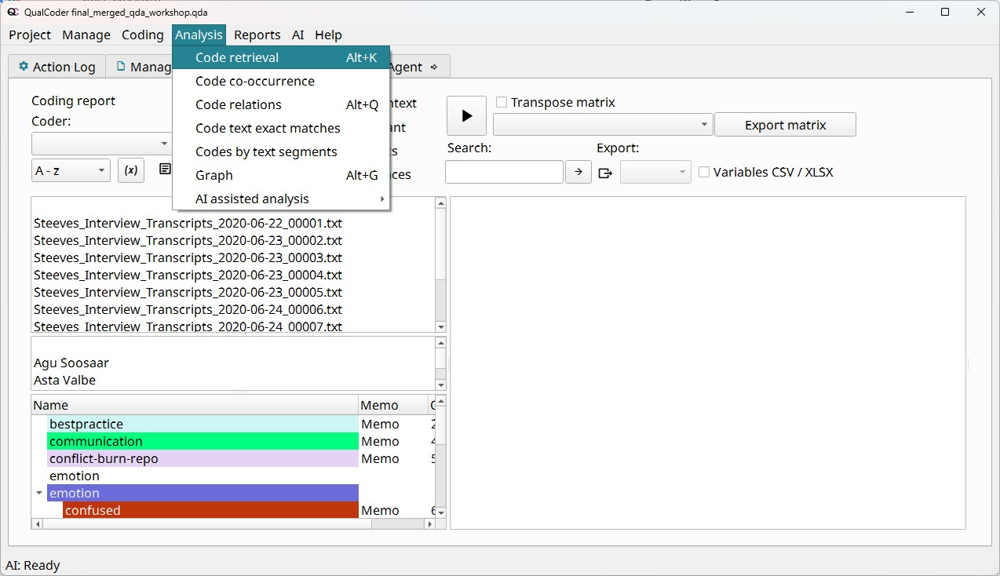
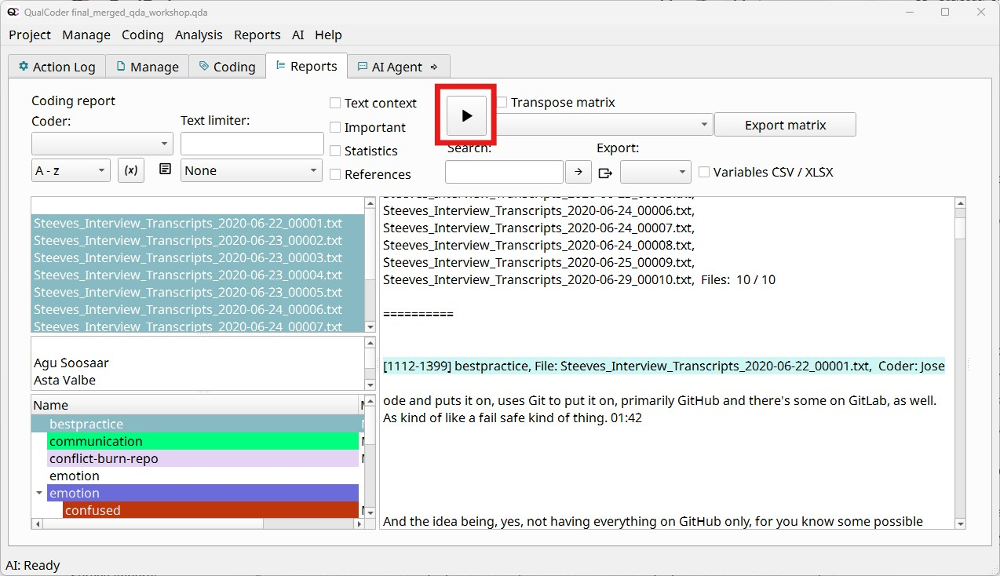
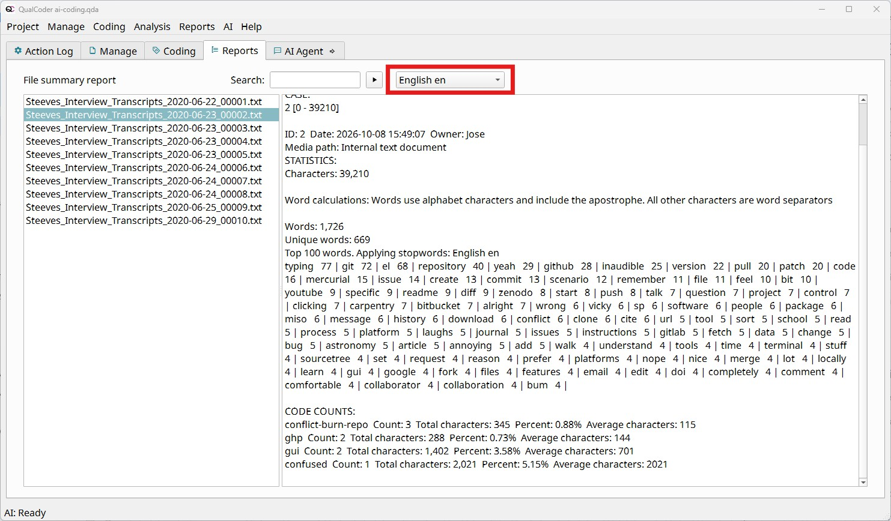
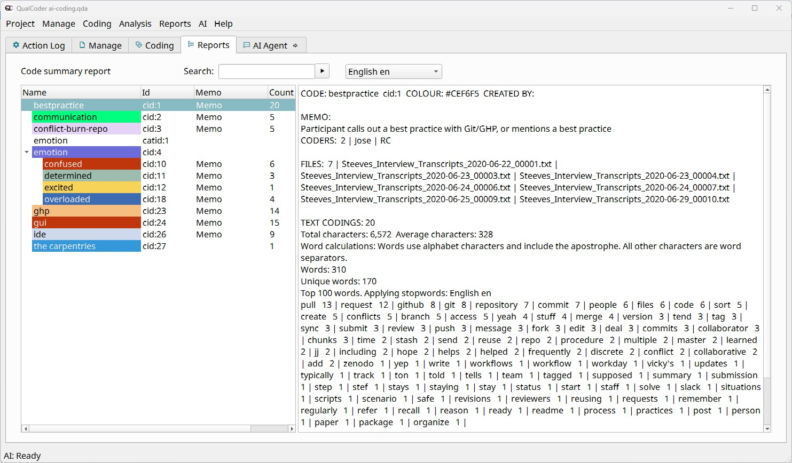
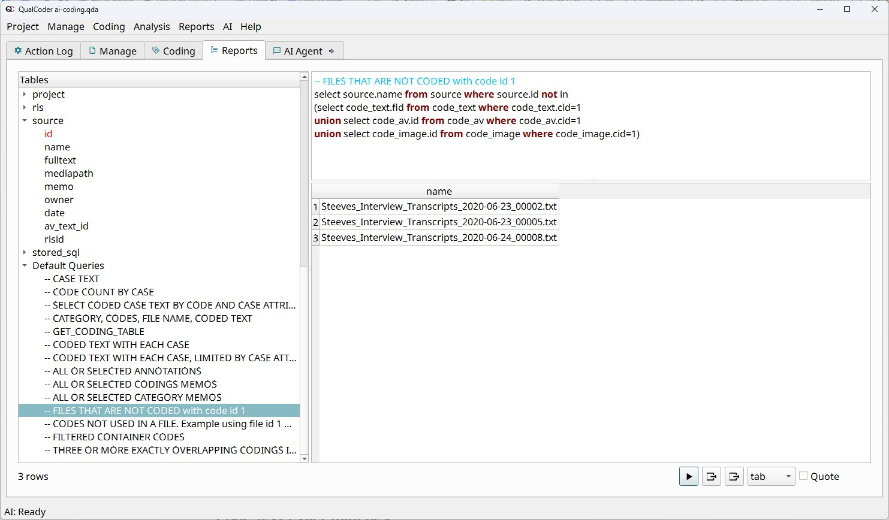

Analyzing and Reporting
Beyond annotating your data, QualCoder provides powerful tools to analyze your results and make reports and graphs. If you want to report an issue in QualCoder or request an additional feature, please open a New issue on the GitHub repository for the project.
We’ll dive into five of the most frequently used tools, but bear in mind, there is much more to explore:
- Code retrieval: Show all coded passages, of a subset of them based on the chosen filters.
- Code co-occurrence: Code matrix counting the number of times two codes have been used in the same text.
- Charts: Insightful graphs based on your data, like word clouds, bar charts counting code frequency or pie charts showing their relative frequency, code heatmaps by file or case.
- File and code summaries: For a given file or code, show how many characters were coded and what are the most frequent words in the data, optionally removing common words.
- Database queries: advanced users can run SQL queries on the project database. Back up first, as queries can change data.
Other tools:
- Code comparison, in case you have multiple coders and are making intercoder reliability analysis.
- Code frequencies, by coder.
- Code text exact matches, to see if identical excerpts have been given different codes.
- Journals, a place in your project to keep note of your ideas.
As we don’t have a big amount of text coded until now, we will merge another project to the one we are working on now. This will enrich the demonstration of the different analysis and report tools, as we will have more data show up in our outputs and plots.
Beyond this specific purpose for the workshop, merging projects is useful when your workflow has multiple coders analyzing the same files and you want to bring it all together.
To merge the project we have prepared for you follow these steps:
- Make sure the
qualcoder-workshop-projectfolder you downloaded for the workshop contains a folder calledcoded-project.qda. Take note of the location of this folder in your computer. - In QualCoder, go to Help > Special functions
- In the pop-up window, click the button inside the
Merge project into this projectsection - Click the
Runbutton
Code retrieval
To have all the coded excerpts in one place to analyze your data as a whole, the best place to start is the Code retrieval (sometimes called the coding report) tool, which you can access in the top menu Analysis > Code retrieval.

Once you are there, the usual workflow is:
- Choose one or more codes or categories.
- Select one or more files. If you want to return all coded excerpts for the given code(s), select all the files.
- Optionally narrow by case, attribute (e.g. only second-year students), or coder.
- Click the
Runbutton (as highlighted in red in the next screenshot) to show the results on the right pane.

Whenever you want to select multiple files, codes or cases, the fastest way is to use the Shift key. For example, if you want to select all the files, you would: 1) Select the first file, File 001, 2) Press and hold the Shift key, 3) Select the last file, File 010, 4) Release the Shift key.
To select multiple files one by one, press and hold the Ctrl or Cmd key while selecting the files.
You can analyze your data directly on this screen, scrolling up and down on the right pane. You can also export the results to HTML, TXT, CSV, XLSX, or ODT to read them in a different software.
Another option is use the matrix view, to place codes (or categories) against files or cases, so you can see who talked about what. This tool is located at the right of the Run button we used to show the results. You can export the resulting matrix to XLSX.
Code co-occurrence
This tool creates a matrix with all your codes both in the vertical and horizontal axes, each cell representing the number of times the given codes have overlapped or are right next to each other in your data. You can open it navigating to Analysis > Code co-occurrence.

Clicking on a cell shows the text where both codes have overlapped.

This is a useful result for your analysis, mainly in two ways:
- If you notice redundant codes (being used for the same phenomenon), you could make the decision to merge the codes.
- You spot a pattern where different codes tend to be close together in multiple cases, which you could infer as a relationship between two phenomena, an emerging theme.
Charts
There are a number of different graphs with aggregated data you can easily generate and export.
Going to Reports > Charts shows the available charts. For all of them you can filter what data is included in the plot with the options below “Data filters”.
- Pie and sunburst and treemap charts, to show the relative frequency (percentage) of times a code is used.
- Bar and cumulative bar charts, to show the absolute frequency (number) of times a code is used, per file or case if you choose a cumulative bar chart.
- Heatmaps to show and compare visually the frequency a code is used by file or case.
- Attribute charts to describe your cases or files by the attributes you have assigned them.
- Word clouds to show the most frequent words in your coded data.
Once the plot shows up in your web browser, you can download it by clicking the camera icon on the top-left corner.
File and code summaries
In the Reports menu you can find File summary and Code summary.
- File summary shows the following statistics for the file you select on the left pane:
- Total number of characters, words, and unique words on the file
- Top 100 words in the file and their frequency. Make sure to filter out common words (also known as stopwords), with the drop-down menu shown in the screenshot below
- For each code used in the file: the number of times it was used, the number of characters that the coded text contains, and a percentage calculated on the total number of characters in the document

- On the other hand, Code summary shows: - Coders and files that used the code - Number of times the code has been used, along with the number of characters in the excerpts and the average per excerpt - Number of words and unique words on the coded excerpts - Top 100 words on the excerpts and their frequency. The option to remove stopwords is also available here

Database queries
QualCoder gives us the great feature to directly access the database behind all our data, accessible in Reports > Database queries. For users who are comfortable with SQL queries, it will be useful to get custom reports from their project.
Let’s see three examples:
Using a default query to list files not including a given code
- On the left pane, scroll all the way down to “Default Queries”
- Select “FILES THAT ARE NOT CODED with code id 1”
- Click the
Runbutton to execute the query - The result shows the files that don’t have the code with ID 1, which in our example represents “bestpractice”
- You can see the query includes not only coded text (code_text), but also audio/video (code_av) and images (code_image)
- Try modifying the query to use a different code ID, or to show the files that do have the code

Let’s write ourselves a simple query, returning all file names where the full text contains the word “github”
SELECT id, name FROM source WHERE fulltext LIKE '%rstudio%' OR fulltext LIKE '%r studio%'We could read this query as follows:
- The database has a table of data called
source, which contains all our file sources - This table has fields
id,name, andfulltext, containing our files id, name and its entire text - We filter our results with the
WHEREclause, filtering text that contains either “rstudio” or “r studio”
- The database has a table of data called
A more complex query, involving the
code_nameandcode_texttables, searching for coded text that contains the word “jupyter”SELECT source.name, code_name.name, code_text.seltext FROM code_text JOIN source ON code_text.fid = source.id JOIN code_name ON code_text.cid = code_name.cid WHERE code_text.seltext LIKE '%jupyter%'
If you want to learn more about databases and SQL, we invite you to read the Software Carpentry or Library Carpentry lessons.
Other tools
Code comparison and code frequencies
If your project involves multiple coders reviewing the same data, probably you will be interested in comparing their coding agreement. In other words, you’re interested in intercoder reliability, also known as inter-rater reliability. The tool in Reports > Comparison compares two coders on the same text using percentage agreement and Cohen’s kappa, a measure of agreement beyond chance.
Another tool to see the number of passages coded, disaggregated by code name and coder is found in Reports > Code frequencies
If you want are interested in learning more about intercoder reliability for your project, reach out to the Library’s Research Data Services department at rds@library.ucsb.edu.
Journals
Journals are free-form notes for recording ideas, decisions and emerging themes as you code. They support reflexivity: being aware of how your own views shape the analysis.
- The journal window floats, so you can keep it open beside the coding screen.
- Add simple formatting with Markdown:
#for headings (up to three levels),*italics*and**bold**. Web links become clickable from the right-click menu. - Search journals, sort them by name or date, filter them, add attributes, and export one journal or all of them as a single file.
You can see and manage all your journals under Manage > Journals.
Memo vs journal: a memo belongs to one code, file or passage; a journal entry is about the project as a whole.